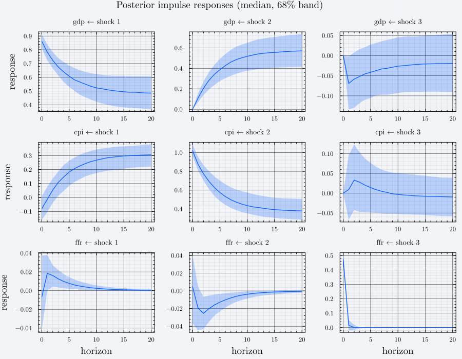

Impulse Responses and Long-Run Multipliers
All three identification routes converge on one output type, IRFdraws, so everything on this page applies regardless of how the shocks were identified.
The IRFdraws layout
(
ndraws = length(irf.H), # one entry per posterior draw
horizons = length(irf.H[1]), # horizon + 1, because s = 0 is included
per_horizon = size(irf.H[1][1]), # vars × vars
method = irf.method,
)(ndraws = 500, horizons = 21, per_horizon = (3, 3), method = :cholesky)So irf.H[d][s + 1][i, j] is the response of variable i to shock j at horizon s, in draw d. Horizon 0 lives at index 1 — the impact response is included, not dropped.
| Field | Meaning |
|---|---|
H | Vector over draws of Vector over horizons of vars × vars matrices |
horizon | Maximum horizon s |
lags, vars, names | Carried through from the reduced form |
method | Which identification produced these (:short_run, :sign_restriction, :hamilton_structural) |
Underneath, impulse_responses builds $\Psi_0 = I$, $\Psi_s = \sum_{\ell=1}^{\min(s,p)} \Phi_\ell \Psi_{s-\ell}$ from the companion form (companion_matrix, nonorthogonalized_irf) and post-multiplies by the impact matrix — a Cholesky factor, its rotation, or $A^{-1}$, depending on the route.
Posterior summaries
Reduce across draws for each (i, j, s):
function irf_quantiles(irf, i, j; probs = (0.16, 0.5, 0.84))
paths = [[d[s + 1][i, j] for d in irf.H] for s in 0:irf.horizon]
return (
lo = [quantile(p, probs[1]) for p in paths],
md = [quantile(p, probs[2]) for p in paths],
hi = [quantile(p, probs[3]) for p in paths],
)
end
q = irf_quantiles(irf, 1, 1)
round.(q.md[1:5], digits = 4)5-element Vector{Float64}:
0.8616
0.7825
0.7236
0.6753
0.639Fan charts
A 68% credible band around the posterior median, for every variable-shock pair:
using Plots
panels = map(Iterators.product(1:irf.vars, 1:irf.vars)) do (i, j)
q = irf_quantiles(irf, i, j)
plot(
0:irf.horizon, q.md;
ribbon = (q.md .- q.lo, q.hi .- q.md),
fillalpha = 0.25,
label = false,
title = "$(irf.names[i]) ← shock $(j)",
titlefontsize = 9,
xlabel = i == irf.vars ? "horizon" : "",
ylabel = j == 1 ? "response" : "",
)
end
plot(
permutedims(panels)...;
layout = (irf.vars, irf.vars),
size = (900, 700),
plot_title = "Posterior impulse responses (median, 68% band)",
plot_titlefontsize = 12,
legend = false,
)
Rows are responding variables, columns are shocks — the same orientation as the sign_pattern matrix in Structural Identification. The recursive ordering is visible in the top row: gdp is ordered first, so shocks 2 and 3 have exactly zero impact effect on it.
Long-run multipliers
long_run_multiplier computes $\Xi = (A - \sum_{\ell} B_\ell)^{-1}$, the cumulative effect of a unit structural shock. It takes the raw matrices, not an IRFdraws, so apply it per draw. At the reduced form $A = I$, giving the familiar $(I - \Phi_1 - \cdots - \Phi_p)^{-1}$:
A = Matrix(1.0I, est.vars, est.vars)
Ξ = [
long_run_multiplier(A, b, est.lags, est.include_constant)
for b in draws_nw.β
]
round.(sum(Ξ) / length(Ξ), digits = 3)3×3 Matrix{Float64}:
426.637 433.377 -82.825
263.471 276.64 -50.141
0.971 0.714 0.782These are large here by construction — two of the three series are random walks, so their long-run multipliers are near-singular. On real data, an implausibly large $\Xi$ is a useful signal that the VAR is close to non-stationary and that a specification in levels may be the wrong choice.
Because a restriction on $\Xi$ is just a function of $(A, B)$, it plugs into the structural prior through the same restrictions mechanism as everything else — that is what long_run_sign_restriction wraps.